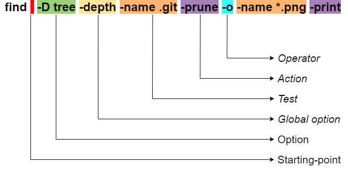

find 命令
find 命令用来在目录树里查找文件。本文主要介绍 GNU find. 它从每个 starting-point 开始递归搜索，通过求值 expression 的真值来确定输出结果。
find 的命令行组成

- Options
- Starting-point
- Expression
- Tests
- Actions
- Global options
- Position options
- Operators
测试的目录
1
2
3
4
5
6
7
8
9
| ➜ phy git:(main) ls -1 -a
.
..
.git
.gitignore
.idea
README.md
phy.png
phy.py
|